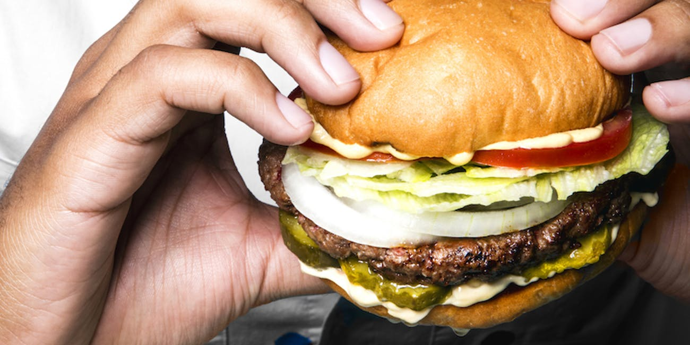

ကယ္လိုရီႏွင့္ က်န္းမာေရး

ကယ္လိုရီဆိုတာ ခုခ်ိန္မွာ လူအေတာ္မ်ားမ်ား ရင္းႏွီးေနတဲ့စကားလံုးပါ။
“ကယ္လိုရီမ်ားတာေတြမစားဘူး ဝမွာေၾကာက္တယ္”
“ကယ္လိုရီက်ေအာင္ ေလ့က်င့္ခန္းလုပ္တယ္” စသျဖင့္ေပါ့။
ဒါဆို ကယ္လိုရီဆိုတာ မေကာင္းတဲ့အရာႀကီးလား။ ဒီလိုေတာ့ မဟုတ္ပါဘူးေနာ္။
ကယ္လိုရီဆိုတဲ့အဓိပၸါယ္ကို ရွင္းရွင္းလင္းလင္း ျဖစ္ေအာင္ေျပာမယ္ဆိုရင္
ကယ္လိုရီဟာ စြမ္းအင္ကိုတိုင္းတာတဲ့ ယူနစ္တစ္ခုပါ။
အစားအေသာက္ေတြနဲ႔ ပတ္သက္မွသာ သံုးတာမဟုတ္ဘဲ အျခားစြမ္းအင္ေတြအတြက္လည္း သူ႔ကို သံုးပါတယ္။
ဒီေဆာင္းပါးကေတာ့ အစားအေသာက္နဲ႔ကယ္လိုရီအေၾကာင္းကိုပဲ ေျပာျပေပးမွာ ျဖစ္ပါတယ္။
အစားအေသာက္ေတြကို စားေသာက္လိုက္ၿပီဆိုရင္ ခႏၶာကိုယ္အတြက္ စြမ္းအင္ရပါတယ္။
ဒီစြမ္းအင္ေတြ သံုးၿပီးလူေတြ အလုပ္လုပ္ၾက၊ သြားလာလႈပ္ရွားၾကရပါတယ္။ ဒီေတာ့ လူသားေတြ ေန႔စဥ္လႈပ္ရွားသြားလာႏိုင္ဖို႔အတြက္ စြမ္းအင္ ဒါမွမဟုတ္ ကယ္လိုရီက လိုကိုလိုအပ္ပါတယ္။
အဲလို အေရးႀကီးတဲ့ ကယ္လုိရီဓာတ္ဟာ လိုအပ္တာထက္နည္းလြန္းတာ ဒါမွမဟုတ္ မ်ားလြန္းတဲ့အခါမွာေတာ့ က်န္းမာေရးကို ထိခိုက္ေစႏိုင္ပါတယ္။
လူတစ္ေယာက္နဲ႔တစ္ေယာက္ တစ္ေန႔တာအတြက္ လိုအပ္တဲ့ကယ္လိုရီပမာဏဟာ မတူႏိုင္ပါဘူး။
အသက္၊ ကိုယ္အေလးခ်ိန္၊ ေယာက်္ားမိန္းမ၊ က်န္းမာေရးအေျခအေန၊ လူေနမႈဘဝပံုစံစတဲ့ ကဲြျပားမႈေတြ ေပၚမူတည္ၿပီး လိုအပ္တဲ့ပမာဏ ကဲြျပားႏိုင္ပါတယ္။
အေျခခံေယဘုယ်အားျဖင့္ေတာ့ သက္လတ္ပိုင္း အမ်ိဳးသမီးတစ္ေယာက္အတြက္ တစ္ေန႔ကို ကယ္လိုရီ ၁၂၀၀ လိုအပ္ၿပီး သက္လတ္ပိုင္း အမိ်ဳးသားတစ္ေယာက္အတြက္ ကယ္လိုရီ ၁၈၀၀ လိုအပ္ပါတယ္တဲ့။
ကယ္လိုရီလိုအပ္တာထက္ နည္းၿပီး စားသံုးေနမိရင္ ဘာျဖစ္မလဲ?
က်န္းမာေရးအတြက္ မလိုလားအပ္တာေတြ ျဖစ္လာႏိုင္ပါတယ္။ ႂကြက္သားေတြက်ံဳလွီလာမယ္၊ အားမရိွသလိုခံစားရမယ္။ အစားေလၽွာ့စားၿပီး ဝိတ္ခ်ဖို႔ႀကိဳးစားသူေတြမွာ ေတြ႕ရမ်ားပါတယ္။
အစားအလြန္အကၽြံေလၽွာ့စားတာေၾကာင့္ ကိုယ္ခႏၶာက လိုအပ္တဲ့ ကယ္လိုရီပမာဏကို မရေတာ့တဲ့အခါ ႂကြက္သားေတြက ရတဲ့ပရိုတင္းဓာတ္ကို အားကိုးၿဖိဳခဲြပါေတာ့တယ္။ ဒါေၾကာင့္ ပိန္လွီၿပီးအားေလ်ာ့လာရတာပါ။
အစားအစာကေန အာဟာရမယ့္ ဗီတာမင္ဓာတ္၊ အသားဓာတ္နဲ႔ ကစီဓာတ္ ဆံုးရႈံးေနတဲ့အခါ အာဟာရခ်ဳိ႕တဲ့ တဲ့ လကၡဏာေတြခံစားရပါလိမ့္မယ္။
အစာလံုးဝမစားတာ၊ ေလၽွာ့စားလြန္းတာေတြေၾကာင့္ အစာအိမ္ျပႆနာေတြပါ ခံစားရႏိုင္ပါတယ္။
ဒါဆိုကယ္လိုရီအမ်ားႀကီးစားသံုးေနမိရင္ေရာဘယ္လိုျဖစ္ႏိုင္လဲ?
စိတ္ပိုင္းဆိုင္ရာအေနနဲ႔ေတာ့ ေက်နပ္ေပ်ာ္ရႊင္ေနမွာပါ။ စားခ်င္တာေတြအမ်ားႀကီးစားလိုက္ရၿပီဆိုရင္ေပါ့။
ခႏၶာကိုယ္အေနနဲ႔ကေတာ့ စားသံုးလိုက္တဲ့ကယ္လိုရီေတြကို လိုအပ္တဲ့ ေနရာမွာ ျပန္သံုးပါတယ္။ ပိုလၽွံေနတဲ့ ကယ္လိုရီေတြကို ကိုယ္တြင္းက အဆီဆဲလ္ေတြထဲမွာ သိမ္းပါတယ္။ အခ်ဳိ႕ကေတာ့ စြန္႔ပစ္တဲ့ အညစ္အေၾကးနဲ႔ ပါသြားပါတယ္။
ဒီလို အဆီဆဲလ္ေတြထဲမွာ ကယ္လိုရီသိမ္းတာေၾကာင့္ ဝလာတယ္တို႔ ဝိတ္တက္လာတယ္တို႔ ျဖစ္လာရပါတယ္။
ဒါဆိုက်န္းမာေရးအတြက္သင့္ေတာ္ေအာင္ ကယ္လိုရီေတြကိုဘယ္လိုခ်င့္ခ်ိန္ရမလဲ?
ကယ္လိုရီကိုပဲ ေရတြက္ေနရံုမရပါဘူး။ ဒီကယ္လိုရီေတြေပးေနတဲ့ အစားအေသာက္ကလည္း အေရးပါပါတယ္။
ဥပမာ ေပါင္မုန္႔မီးကင္ေထာပတ္သုတ္တစ္ျခမ္းက ကယ္လိုရီ ၂၅၀ ခန္႔ေပးပါတယ္။ ပန္းသီးႏွစ္လံုးကို ေဖ်ာ္ထားတဲ့သဘာဝေဖ်ာ္ရည္ကလည္း ဒီေလာက္ကယ္လိုရီပဲ ေပးပါမယ္။
အာဟာရႂကြယ္ဝမႈနဲ႔ က်န္းမာေရးအတြက္ သင့္ေတာ္မႈက ပန္းသီးေဖ်ာ္ရည္က သာပါတယ္။
ဒါေၾကာင့္ ဆီေၾကာ္ေတြ၊ အျမန္အစားအစာ၊ အသင့္စားအစားအစာေတြကို နည္းနည္းစီ ေန႔တိုင္းစားေနမယ့္အစား က်န္းမာေရးအတြက္ သင့္ေတာ္တဲ့သဘာဝအစားအစာေတြကို အသင့္အတင့္ ပမာဏ စားေပးတာက ပိုအက်ိဳးရိွပါတယ္။
စားလိုက္တဲ့ ကယ္လိုရီပမာဏကို ျပန္ေခ်ဖ်က္ႏိုင္ဖို႔ ကိုယ္လက္လႈပ္ရွားမႈ မွန္မွန္ လုပ္ေပးဖို႔လည္းလိုပါတယ္။
တစ္ေန႔တာ ကယ္လိုရီ ဘယ္ေလာက္စားသင့္တာ သိၿပီးစားႏိုင္ရင္ ေကာင္းပါတယ္။
တြက္ခ်က္နည္းကေတာ့
လူရြယ္ အမ်ိဳးသားမ်ားအတြက္ဆို
၆၆+(၆.၂၃×ကိုယ္အေလးခ်ိန္-ေပါင္ျဖင့္)+(၁၂.၇×အရပ္အျမင့္-လက္မျဖင့္)_(၆.၈×အသက္-ႏွစ္ျဖင့္)=Basal Metabolic Rate BMR
လူရြယ္ အမ်ိဳးသမီးမ်ားအတြက္ဆို
၆၆၅+(၄.၃၅×ကိုယ္အေလးခ်ိန္-ေပါင္ျဖင့္)+(၄.၇×အရပ္အျမင့္-လက္မျဖင့္)_(၄.၇×အသက္-ႏွစ္ျဖင့္)=BMR
ရလာတဲ့BMRကို
အလႈပ္အရွား အလြန္နည္းေသာ ေနထိုင္မႈပံုစံဆိုလၽွင္
BMR×၁.၂=တစ္ေန႔လိုအပ္ေသာကယ္လိုရီပမာဏ
အလႈပ္အရွား အသင့္အတင့္ရိွေသာေနထိုင္မႈပံုစံဆိုလၽွင္
BMR×၁.၅၅=တစ္ေန႔လိုအပ္ေသာကယ္လိုရီပမာဏ
အလႈပ္အရွား မ်ားေသာ ေနထိုင္မႈပံုစံဆိုလၽွင္
BMR×၁.၈=တစ္ေန႔လိုအပ္ေသာကယ္လိုရီပမာဏ
ဒီလိုသိရွိၿပီးၿပီဆိုရင္ေတာ့ ကယ္လိုရီပမာဏကို မိမိသင့္ေတာ္မယ္ထင္တဲ့အတိုင္း ထိန္းညိႇစားလို႔ ရၿပီေပါ့ေနာ္။
က်န္းမာေရးနဲ႔ ညီညြတ္တဲ့ အစားအစာေတြကို အသက့္အတင့္စားသံုးမယ္၊ ကိုယ္လက္လႈပ္ရွားမႈလည္း ပံုမွန္လုပ္မယ္ဆိုရင္ေတာ့ ကယ္လိုရီဆိုတာ ေၾကာက္စရာမဟုတ္ေတာ့ပါဘူးေနာ္။
* အားလံုး က်န္းမာေပ်ာ္ရႊင္ႏိုင္ၾကပါေစ။ *
စာေရးသူ- ေဒါက္တာ ခ်စ္စႏီၵေက်ာ္